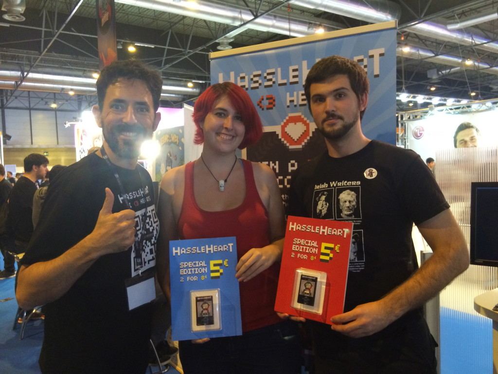
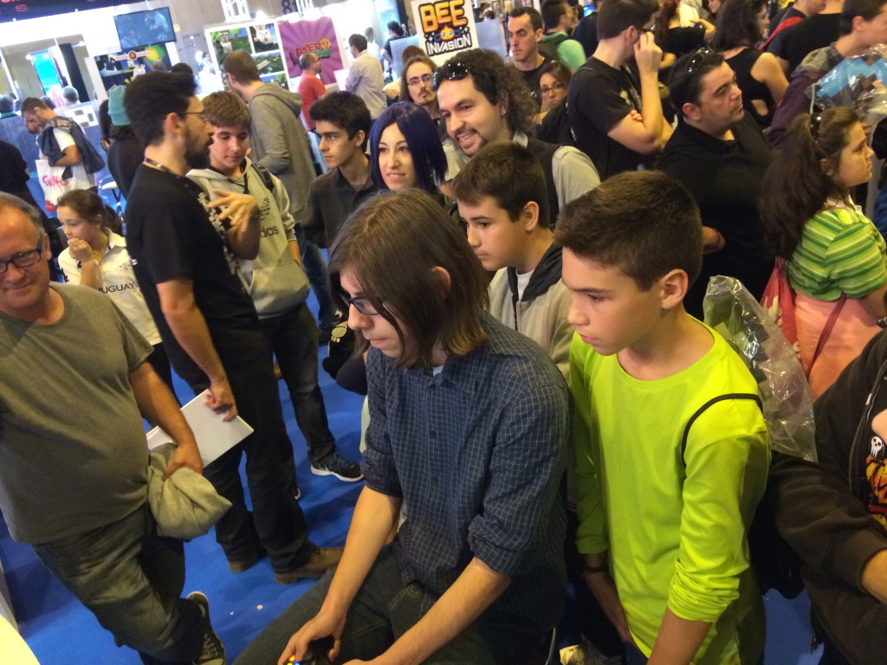
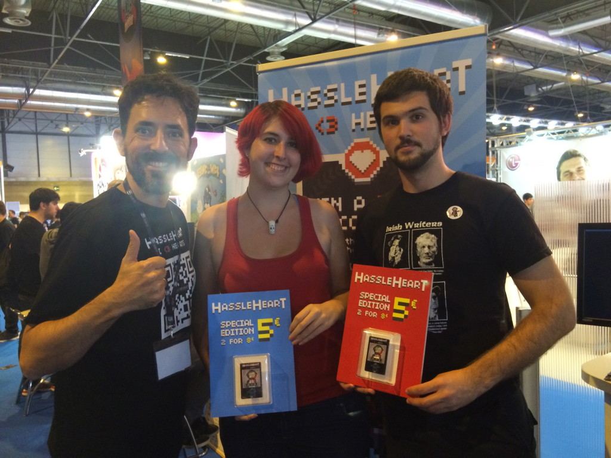
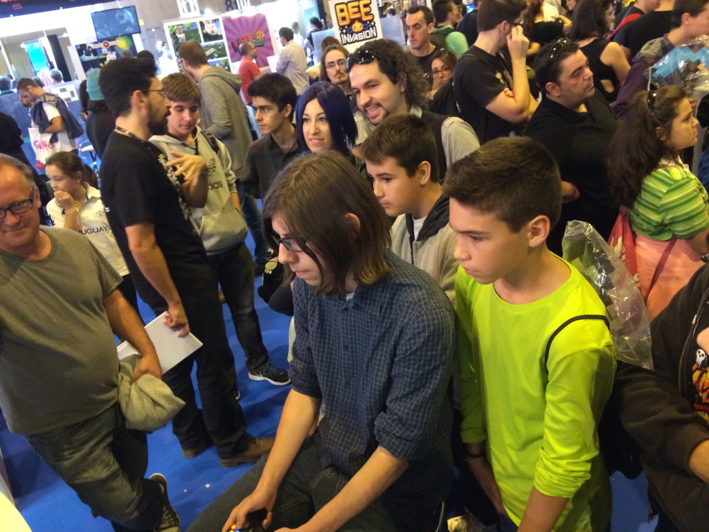

Madrid Games Week photolog!

We want to thank you all again for visiting us at our booth during Madrid Games Week. We have posted all your photos here so you can find yourself!


We want to thank you all again for visiting us at our booth during Madrid Games Week. We have posted all your photos here so you can find yourself!
